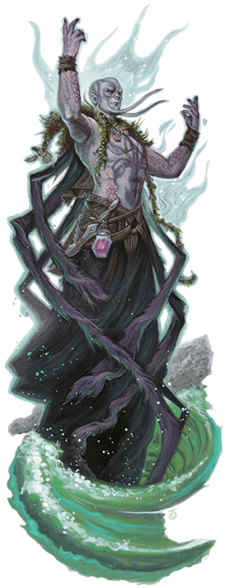

Kraken Priest
A kraken can seem godlike to folk who have faced its fury. Those who mistake its might for divine power and those who seek to appease the monster through veneration are sometimes rewarded with power, to serve thereafter as kraken priests.

Every kraken priest undergoes a change in appearance that reflects the kraken's influence, although each one differs in how their reverence is displayed. One kraken priest might have ink-black eyes and a suckered tentacle for a tongue, while another has a featureless face and a body covered in eyes and mouths that dribble seawater. These horrific manifestations intensify when the kraken possesses its minion to utter dire pronouncements.
Environment
Coastal, Urban
Token

Kraken Priest
Medium Monstrosity, Typically Chaotic Evil
- Armor Class 15 (natural armor)
- Hit Points 75 (10d8 + 30)
- Speed 30 ft., swim 30 ft.
STR DEX CON INT WIS CHA 12 (+1) 10 (+0) 16 (+3) 10 (+0) 15 (+2) 14 (+2)
- Proficiency Bonus +3
- Saving Throws
- Damage Vulnerabilities
- Damage Resistances
- Damage Immunities
- Condition Immunities
- Skills Perception +5
- Senses passive Perception 15
- Languages Common, Aquan
- Challenge 5
Amphibious. The priest can breathe air and water.
Actions
Multiattack. The priest makes two Thunderous Touch or Thunderbolt attacks.
Thunderous Touch. Melee Spell Attack: +5 to hit, reach 5 ft., one target. Hit: 27 (5d10) thunder damage.
Thunderbolt. Ranged Spell Attack: +5 to hit, range 60 ft., one target. Hit: 11 (2d10) lightning damage plus 11 (2d10) thunder damage, and the target is knocked prone.
Spellcasting. The priest casts one of the following spells, requiring no material components and using Wisdom as the spellcasting ability (spell save DC 13):
- At will: command, create or destroy water
- 3/day each: control water, darkness, water breathing, water walk, water lasso
- 1/day: Evard's black tentacles
Voice of the Kraken (Recharges after a Short or Long Rest). A kraken speaks through the priest with a thunderous voice audible within 300 feet. Creatures of the priest's choice that can hear the kraken's words (which are spoken in Abyssal, Infernal, or Primordial) must succeed on a DC 14 Wisdom saving throw or be frightened of the priest for 1 minute. A frightened target can repeat the saving throw at the end of each of its turns, ending the effect on itself on a success.